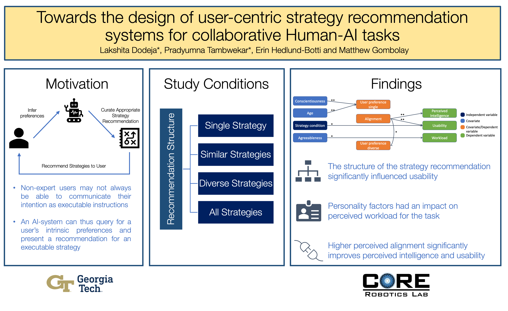
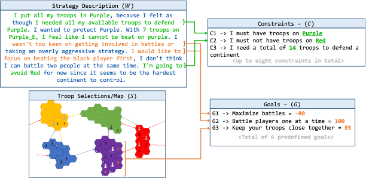

|
Hi! I am Lakshita, a second year PhD student at Brown University, advised by Prof. Stefanie Tellex where I also work with Prof. George Konidaris. I also collaborate with Robotics and AI Institute. Recently, I have been working on adapting robot manipulation policies, based on foundation models, behavior cloning and diffusion using reinforcement learning and uncertainty estimation. I also completed my Master's in Computer Science at Georgia Tech with a specialisation in Computational Perception and Robotics where I worked in the CORE Robotics Lab advised by Prof. Matthew Gombolay. During my Master’s I worked on Human-Robot Interaction specifically on distilling strategic intent of users from unstructured natural language commands and designing user centric strategy recommendation systems for Human-AI tasks. Previously, I also worked as Software Development Engineer at Amazon, India in the Prime Verification Team. I did my undergrad studies from NIT Kurukshetra, India where I worked with Dr Mayank Dave on Digital Image Watermarking and Wireless Networks. Email / CV / Linkedin / Google Scholar / Github / Twitter / Goodreads |

|

|
Accelerating Residual Reinforcement Learning with Uncertainty Estimation
Lakshita Dodeja, Karl Schmeckpeper, Shivam Vats, Thomas Weng, and Stefanie Tellex. In Out-of-Distribution Generalization in Robotics Workshop @ RSS'25 Residual Reinforcement Learning (RL) is a popular approach for adapting pretrained policies by learning a lightweight residual policy to provide corrective actions. While Residual RL is more sample-efficient compared to finetuning the entire base policy, existing methods struggle with sparse rewards and are designed for deterministic base policies. We propose two improvements to Residual RL that further enhance its sample efficiency and make it suitable for stochastic base policies. First, we leverage uncertainty estimates of the base policy to focus exploration on regions in which the base policy is not confident. Second, we propose a simple modification to off-policy residual learning that allows it to observe base actions and better handle stochastic base policies. ExpandWe evaluate our method with both Gaussian-based and Diffusion-based stochastic base policies on tasks from Robosuite and D4RL, and compare against state-of-the-art finetuning methods, demo-augmented RL methods, and other residual RL methods. Our algorithm significantly outperforms existing baselines in a variety of difficult manipulation environments. |
|  |
Towards the design of user-centric strategy recommendation systems for collaborative Human–AI tasks
Lakshita Dodeja*, Pradyumna Tambwekar*, Erin Hedlund-Botti, and Matthew Gombolay. In International Journal of Human Computer-Studies Artificial Intelligence is being employed by humans to collaboratively solve complicated tasks for search and rescue, manufacturing, etc. Efficient teamwork can be achieved by understanding user preferences and recommending different strategies for solving the particular task to humans. In this paper, we seek to understand the important factors to consider while designing user-centric strategy recommendation systems for decision-making. We conducted a human-subjects experiment (n=60) for measuring the preferences of users with different personality types towards different strategy recommendation systems. Paper Link |
|  |
A Computational Interface to Translate Strategic Intent from Unstructured Language in a Low-Data Setting
Pradyumna Tambwekar, Lakshita Dodeja, Nathan Vaska, Wei Xu, Matthew Gombolay. In Findings of EMNLP 2023 Many real-world tasks involve a mixed-initiative setup, wherein humans and AI systems collaboratively perform a task. While significant work has been conducted towards enabling humans to specify, through language, exactly how an agent should complete a task (i.e., low-level specification), prior work lacks on interpreting the high-level strategic intent of the human commanders. In this paper, we build a computational interface capable of translating unstructured language strategies into actionable intent in the form of goals and constraints. Paper Link |

|
Hybrid color image watermarking algorithm based on DSWT-DCT-SVD and Arnold transform
Palak Garg, Lakshita Dodeja, Priyanka, Mayank Dave. In Advances in Signal Processing and Communication: Select Proceedings of ICSC 2018 With emergence of new technologies it is now easier to communicate through multimedia like image, audio, video and text. But at the same time the problem of unauthorized access and copyright protection has also emerged. In order to handle these problems digital image watermarking is one of the best technique. In this paper we present an optimized color image watermarking technique to protect an image data from any unauthorized access. The technique presented in the paper uses a combination of Discrete Stationary Wavelet Transform (DSWT), Singular Value Decomposition (SVD), Discrete Cosine Transform (DCT) and Arnold Transform. Paper Link |
|
|
Brown University
PhD in Computer Science, Aug'23 - present Adviced by Prof Stefanie Tellex, GPA : 4/4 Graduate Researcher, Humans to Robots Lab, Aug'23 - Present |
|
|
Georgia Institute of Technology
Masters in Computer Science, Aug'21 - present Specialising in Computational Perception and Robotics, GPA : 4/4 Graduate Researcher, CORE Robotics Lab, Aug'21 - Aug'23 Graduate Teaching Assistant, Robot Intelligence Planning, Jan'22 - May'22 |
|
|
Amazon Development Center
Software Development Engineer II, June'18 - July'21 Software Development Intern, May'17- Aug'17 Worked in the Amazon Prime Verifiacation Team. |

|
National Insitute of Technology, Kurukshetra
Bachelors in Computer Science, Aug'14 - May'18 Graduated as one of the top 10 students in the department, GPA : 9.35/10 Undergraduate Researcher with Dr Mayank Dave on Networks and Security |